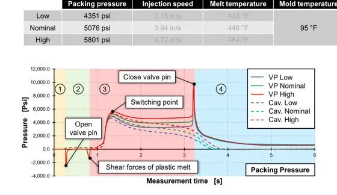

Druck hinter der Nadel
Der Werkzeuginnendruck, gemessen an der Verschlussnadel.
Statt in der Kavität misst IntelliGate p die Kraft, die die Schmelze auf die Verschlussnadel ausübt. In der Einspritzphase zeigt sich der gleiche Verlauf wie bei einem Werkzeuginnendrucksensor.
- Die Schmelze drückt auf die Verschlussnadel. Das geschieht am Anschnitt, am Beginn jeder Kavität.
- Die Nadel drückt auf den Sensor im Nadelhalter. Ein piezoelektrischer Sensor wandelt die Kraft in ein elektrisches Signal.
- Das Signal wird in Druck umgerechnet. Der Sensor ist in pC/N kalibriert und wird mit dem Nadeldurchmesser in bar umgerechnet.
- Sie sehen den Druckverlauf jedes Schusses in Ihrem Überwachungssystem.
- Gleicher Verlauf in der Einspritzphase
- Gleiche Position in jeder Kavität
- Unabhängig vom Werkzeugdesign
